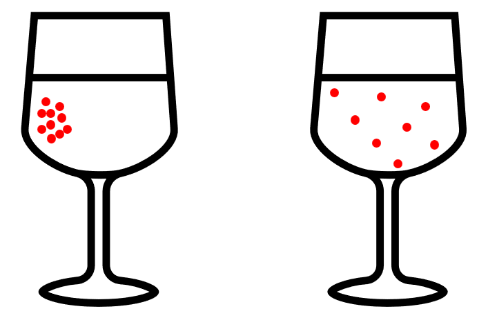
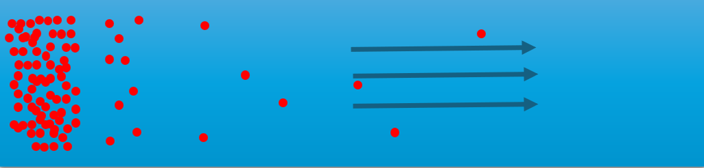
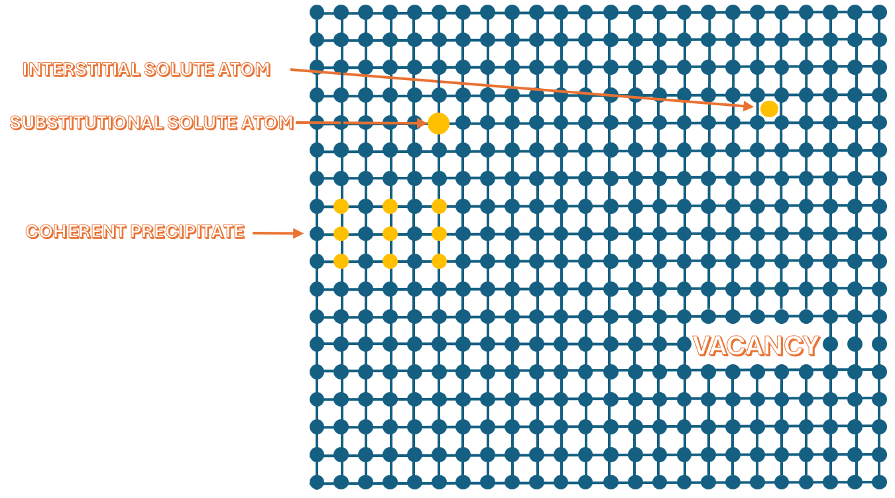
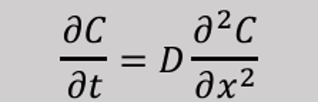
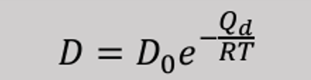
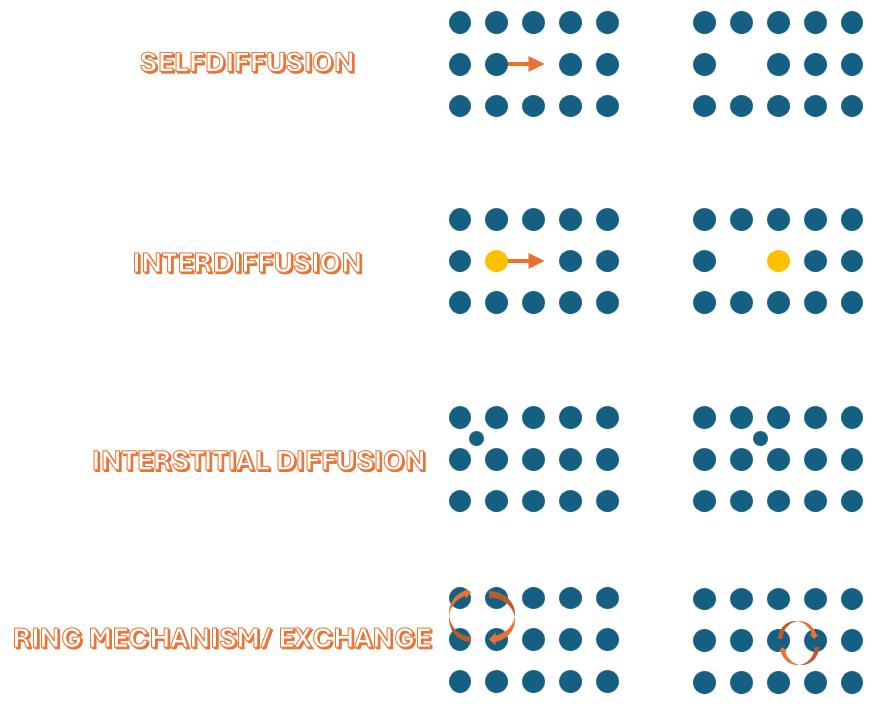
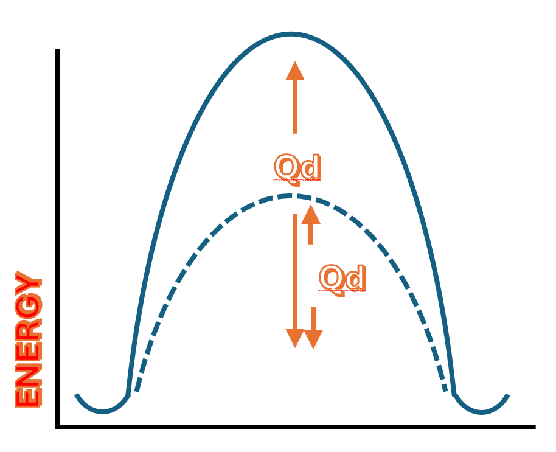

Diffusion

What is diffusion, and what affects it?
This image shows a glass of water with red juice added to it. Why doesn’t all the juice stay concentrated like in the picture on the left? Why does it spread out, as shown in the picture on the right? The answer is diffusion. Diffusion is the movement of particles from an area of high concentration to an area of low concentration, until the concentration becomes even throughout the space. In this case, the juice molecules spread out in the water because there is a higher concentration of juice where it was poured in, and the molecules naturally move to areas with lower concentration, causing the color to distribute evenly over time.
Factors that affect diffusion:
Motions of atoms
Diffusion can be thought of as a general term for the movement of atoms or particles within a material or substance. It is essentially the atoms' own motion through a material. This process occurs in all types of materials — whether they are solids, liquids, or gases. However, diffusion happens faster in liquids and gases than in solids.
Diffusion in Metals
Diffusion in metals occurs as illustrated in the image. Vacancy diffusion is one of the most common diffusion mechanisms in metals. In this process, atoms move by “jumping” into vacant lattice sites (vacancies), leaving behind a vacancy at their original position. The quantity that describes how much or how many atoms pass through a given surface per unit of time due to diffusion is called the diffusion flux.It is denoted by J, and is defined as:
J = mass / (area × time)

We reach what is called steady state when the concentration gradient levels out — that is, when dc/dx approaches 0.

In a molten state, the atoms are arranged in a completely disordered manner. But as the melt solidifies, the atoms begin to rearrange themselves into a crystalline structure. The diffusion coefficient is a temperature-dependent quantity. Bottom line is: The higher the temperature, the larger the diffusion coefficient, and the faster diffusion occurs. That’s really the key takeaway you need to remember from this.
Diffusion Mechanisms
The most common types of mechanisms are:
For the atom to move into the vacancy, it must overcome an energy barrier.
It needs to be supplied with a certain amount of energy in order to move from one site to the other. This is what we refer to as the activation energy.
In other words:
How much thermal energy must we supply to the system for the atom to successfully move from its original position to the vacancy?
The location where diffusion occurs also affects how fast it happens.